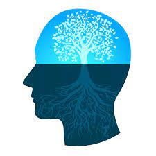

Growth mindset No one is born smart; you have to exercise your brain in order to become smarter. The difference between fixed and growth mindset is that people with a fixed mindset believe you either are or aren’t good at something based on your inherent nature because it is just who you are. However, people with the growth mindset challenge themselves, take charge of their learning and review mistakes until they understand them. According to Carol Dweck, these two different mindsets lead to very different behaviors and results. This shows that the harder you work, the more your ability will grow. I believe that I have a growth mindset because of the experience in education. I see that my growth mindset comes from the way I push
Subsequently, through the skills that I have acquired in my life, I know how more success I am. Back to high school days-when I had to do speeches, the difficult part was when you have to stand up and speak loud. At first, I was a very shy person, and my speeches were so bad because I used to get scared, especially when I used to stand up in front of all the class; most of my speeches went like that. However, we had a speech where you have to talk about twenty-two minutes and stand up in front of all the students. This exemplifies that I have to work hard in order to be good at doing the presentation. I worked so hard I put all my effort just to finish this presentation perfectly. Dweck emphases that you can make a plan of positive action than can remedy a deficiency (2). For instance, I pushed myself to do this presentation without being scared or nervous. Also, this means that no matter how hard the task is, show the best you can to make a difference. To sum up, I tried all my best just to do this presentation right because I saw how bad I was at doing the presentations or speeches, but at the end, it was worth it when I worked
A mindset somewhat defines each and every one of us. It is basically how we view everything around us, and it affects our lives in so many ways! But there are actually two different types of mindsets which are a fixed and a growth mindset. A fixed mindset is the idea that each person has a certain amount of intelligence, while a growth mindset is the belief that intelligence is a potential that can be expanded. A growth mindset is genuinely the desired mindset because a person with a fixed mindset will probably not realize what they are truly capable of. For example, someone with a fixed mindset will feel threatened when challenged and mistakes would degrade their morale, but a person with a growth mindset would view challenges as exciting…show more content…
These mindsets have a large impact in our lives including my own! Even though a growth mindset is the ideal mindset, I consider myself to have more of a fixed mindset than a growth mindset. I do believe that I have experienced both mindsets, but a fixed mindset has been more dominant in my life
Instead, it actually made me realize that I should study.
I would love to have experienced a growth mindset throughout my life, but unfortunately I know I grew up with a fixed mindset. Growing up I remember my parents telling me how smart I am every time I received good grades, and according to the article written by Carol Dweck, that isn’t the best way…show more content…
People with a fixed mindset are usually not motivated to do challenging work, apply very little effort, lose confidence after mistakes, and are intimidated when things get difficult. And I have experienced some of these situations. I get less motivated when I have more work, don’t try my best, and I put myself down after low grades. I lost confidence in myself after every setback, but I should of been looking to learn from them. Growth mindset is the ability to look for strengths even after the biggest failures. For example, a subject perhaps maths at school is known to be a challenging aspect for students to cope up with. Growth mindset is the capacity of not giving up even after one is criticising and/or facing tough challenges yet continually learning from that. However, there is no such thing as one growth mindset, kids and adults can have a different growth mindset (Dweck, 2013). It is the mindset where one believes not everyone can be a scientist but at least could improve their intelligence. These are the people who get engaged in learning new things. The three concepts that will be discussed in this essay are Perma (positive education), character strength and mindsets & resilience. In addition, according to Seligman, students developing Perma in their eternal life will strengthen the idea of a growth mindset. Perma allows oneself to gradually develop themselves which enable them to think beyond. Moreover, it can help cultivate and sustain these five key building terms.
The power of a growth mindset in relation to character strength, a child from a very young age is in the stage of curiosity and the purpose of his/her life. As this child grows, he then forms a perspective about the life he sets for himself. As a fixed mindset, he will encounter obstacles where he would question about his stability of overcoming that obstacle but as a growth mindset, he will not only question but gives it a try until he is happy with the outcome achieved. According to Oppenheimer, Fialkov, Ecker &Portnoy (2014), in developing strategies to resist the difference in achievement, educators should precisely review past and present ways of reconciling with youths in the school setting. Strength-based strategies developed upon the positive impact of personal resources, advising that those in need are the origin of the solution, rather than the cause of the problem. Strength-based practices build upon old strengths while also developing new ones, broadening the student’s capacity for positive emotional states and strengths such as creativity, hope, gratitude, and spirituality. In turn, strength-based approaches can cultivate adolescents who are healthy, happy, and capable of leading meaningful and fulfilling lives (Lerner & Benson, 2003, Park & Peterson, 2008). In relation to developing youth’s character strengths, schools might be able to form happier, the more engaged students will result in possible increases in academic achievement and changes in behaviours. For example, the Penn Resiliency Program was produced and performed in an attempt to improve students’ ability to maintain regular stressors and difficulties by promoting confidence, flexibility, assertiveness, creativity, decision-making, and other coping and problem-solving abilities to students (Seligman et al, 2009). The common depression among youth, the short rise in life satisfaction, and the collaboration between learning and positive emotion all demonstrate that the ability for happiness should be developed in school. There is strong evidence from well-established studies that skills that increase resilience, positive emotion, engagement and meaning can be prepared to youth (Ernst, R, Gillham, J, Reivich, K and Linkins M, 2009). To sum up, a link between the foundation of character strengths and elevated well-being were observed from the studies shown above, providing further evidence for the utilisation of positive psychology teaching applications with diverse, youth populations.
A fixed mindset can often lead to fixed intelligence that can be interpreted as a lack of knowledge. This way of reasoning compromise resilience in an educational setting even amongst high performing students. Thus, making it clear this can reduce resilience (Yeager and Dweck, 2012). A person’s mindsets can be developed and that doing so can promote resilience. It is essential to see that the implicit theory of intelligence and personality are discrete, it is likely for a child to conclude that intelligence can be improved but that personality cannot. Blackwell et al (2007) affirm that these are the variables that define why students with higher incremental theory were more resilient and scored more powerful grades when they faced a challenging school change. However, a recent study claimed to reduce HSC pressure in support of a growth mindset. “Efforts could be made to reduce the ATAR’s reliance on the final years of schooling and to allow appropriate flexibility around deeper learning areas,” the Education Department recommended. It is suggested to examine ways the curriculum could be adapted to more suitably provide learners for a fast-evolving society and place importance on the achievement of children’s’ non-cognitive abilities, such as a growth mindset. If students can be led towards understanding intellectual strength as something that can be acquired over time with effort and strong strategies, then they are more resilient when they are confronted with the uncompromising learning possibilities offered to them. Numerous institutional improvement efforts have focused on improving precision in the curriculum, although if they do not also discuss resilience in the face of these more challenging examples, then making such improvements may be less efficient than expected. Primary responsibility for parents and teachers is to prepare learners to react resiliently when certain challenges occur. A study from Yeager and Dweck’s (2012) article have discovered that what students require the most is not self-esteem encouraging or quality labelling, preferably, they require mindsets that outline challenges as something that the student can take on and master over time with effort, new approaches, learning, help from others, and patience.
In conclusion, it can be seen intelligence and skills can be developed through effort. It is important to consider why a growth mindset is important, that is because it can improve the probability of success. However, an individual would have to operate both a growth and a fixed mindset in a certain stage of life. Quite a large number of researches suggest that people with the growth mindset are more successful than the fixed mindset. People with the growth mindset are much more resilient which allows them to overcome challenges. A growth mindset can be developed by understanding that it exists and allowing the brain to change. Numerous institutional improvement efforts have focused on improving precision in the curriculum, although if they do not also discuss resilience in the face of these more challenging examples, then making such improvements may be less efficient than expected.
“We do not grow absolutely, chronologically. We grow sometimes in one dimension, and not in another; unevenly. We grow partially. We are relative. We are mature in one realm, childish in another. The past, present, and future mingle and pull us backward, forward, or fix us in the present. We are made up of layers, cells, constellations.”

Leave a comment